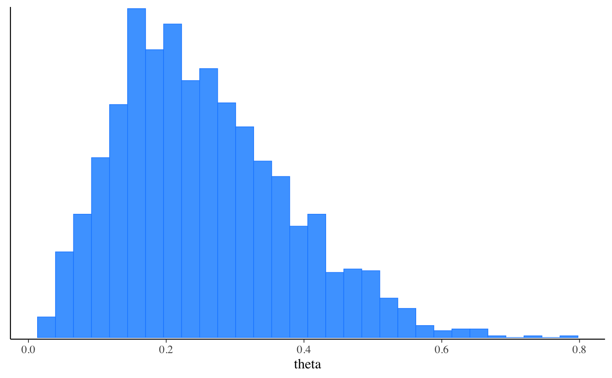
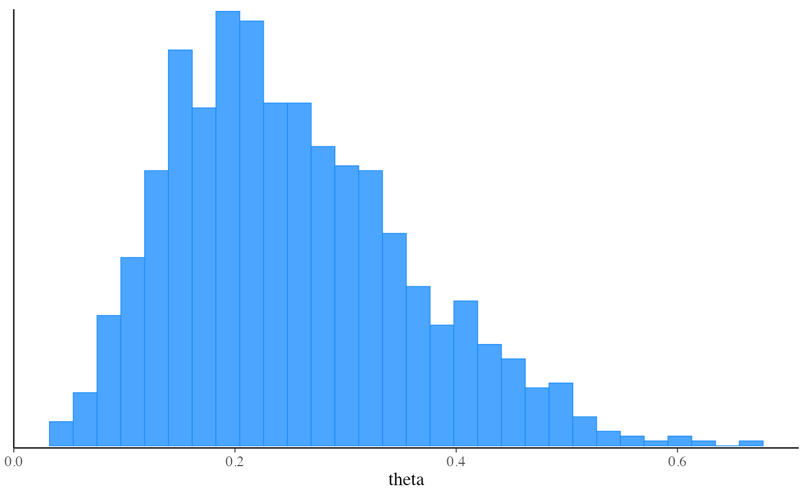

The $optimize() method of a CmdStanModel object runs
Stan's optimizer to obtain a posterior mode (penalized maximum likelihood)
estimate.
Any argument left as NULL will default to the default value used by the
installed version of CmdStan. See the
CmdStan User’s Guide
for more details.
optimize( data = NULL, seed = NULL, refresh = NULL, init = NULL, save_latent_dynamics = FALSE, output_dir = NULL, output_basename = NULL, sig_figs = NULL, threads = NULL, opencl_ids = NULL, algorithm = NULL, init_alpha = NULL, iter = NULL, tol_obj = NULL, tol_rel_obj = NULL, tol_grad = NULL, tol_rel_grad = NULL, tol_param = NULL, history_size = NULL )
| data | (multiple options) The data to use for the variables specified in
the
|
|---|---|
| seed | (positive integer(s)) A seed for the (P)RNG to pass to CmdStan.
In the case of multi-chain sampling the single |
| refresh | (non-negative integer) The number of iterations between
printed screen updates. If |
| init | (multiple options) The initialization method to use for the
variables declared in the
|
| save_latent_dynamics | (logical) Should auxiliary diagnostic information
about the latent dynamics be written to temporary diagnostic CSV files?
This argument replaces CmdStan's |
| output_dir | (string) A path to a directory where CmdStan should write
its output CSV files. For interactive use this can typically be left at
|
| output_basename | (string) A string to use as a prefix for the names of the output CSV files of CmdStan.
|
| sig_figs | (positive integer) The number of significant figures used
when storing the output values. By default, CmdStan represent the output
values with 6 significant figures. The upper limit for |
| threads | (positive integer) If the model was
compiled with threading support, the number of
threads to use in parallelized sections (e.g., when
using the Stan functions |
| opencl_ids | (integer vector of length 2) The platform and
device IDs of the OpenCL device to use for fitting. The model must
be compiled with |
| algorithm | (string) The optimization algorithm. One of |
| init_alpha | (positive real) The initial step size parameter. |
| iter | (positive integer) The maximum number of iterations. |
| tol_obj | (positive real) Convergence tolerance on changes in objective function value. |
| tol_rel_obj | (positive real) Convergence tolerance on relative changes in objective function value. |
| tol_grad | (positive real) Convergence tolerance on the norm of the gradient. |
| tol_rel_grad | (positive real) Convergence tolerance on the relative norm of the gradient. |
| tol_param | (positive real) Convergence tolerance on changes in parameter value. |
| history_size | (positive integer) The size of the history used when approximating the Hessian. Only available for L-BFGS. |
A CmdStanMLE object.
CmdStan can find the posterior mode (assuming there is one). If the posterior is not convex, there is no guarantee Stan will be able to find the global mode as opposed to a local optimum of log probability. For optimization, the mode is calculated without the Jacobian adjustment for constrained variables, which shifts the mode due to the change of variables. Thus modes correspond to modes of the model as written.
The CmdStanR website (mc-stan.org/cmdstanr) for online documentation and tutorials.
The Stan and CmdStan documentation:
Stan documentation: mc-stan.org/users/documentation
CmdStan User’s Guide: mc-stan.org/docs/cmdstan-guide
Other CmdStanModel methods:
model-method-check_syntax,
model-method-compile,
model-method-generate-quantities,
model-method-sample_mpi,
model-method-sample,
model-method-variational
# \dontrun{ library(cmdstanr) library(posterior) library(bayesplot) color_scheme_set("brightblue") # Set path to CmdStan # (Note: if you installed CmdStan via install_cmdstan() with default settings # then setting the path is unnecessary but the default below should still work. # Otherwise use the `path` argument to specify the location of your # CmdStan installation.) set_cmdstan_path(path = NULL)#># Create a CmdStanModel object from a Stan program, # here using the example model that comes with CmdStan file <- file.path(cmdstan_path(), "examples/bernoulli/bernoulli.stan") mod <- cmdstan_model(file)#>mod$print()#> data { #> int<lower=0> N; #> int<lower=0,upper=1> y[N]; #> } #> parameters { #> real<lower=0,upper=1> theta; #> } #> model { #> theta ~ beta(1,1); // uniform prior on interval 0,1 #> y ~ bernoulli(theta); #> }# Data as a named list (like RStan) stan_data <- list(N = 10, y = c(0,1,0,0,0,0,0,0,0,1)) # Run MCMC using the 'sample' method fit_mcmc <- mod$sample( data = stan_data, seed = 123, chains = 2, parallel_chains = 2 )#> Running MCMC with 2 parallel chains... #> #> Chain 1 Iteration: 1 / 2000 [ 0%] (Warmup) #> Chain 1 Iteration: 100 / 2000 [ 5%] (Warmup) #> Chain 1 Iteration: 200 / 2000 [ 10%] (Warmup) #> Chain 1 Iteration: 300 / 2000 [ 15%] (Warmup) #> Chain 1 Iteration: 400 / 2000 [ 20%] (Warmup) #> Chain 1 Iteration: 500 / 2000 [ 25%] (Warmup) #> Chain 1 Iteration: 600 / 2000 [ 30%] (Warmup) #> Chain 1 Iteration: 700 / 2000 [ 35%] (Warmup) #> Chain 1 Iteration: 800 / 2000 [ 40%] (Warmup) #> Chain 1 Iteration: 900 / 2000 [ 45%] (Warmup) #> Chain 1 Iteration: 1000 / 2000 [ 50%] (Warmup) #> Chain 1 Iteration: 1001 / 2000 [ 50%] (Sampling) #> Chain 1 Iteration: 1100 / 2000 [ 55%] (Sampling) #> Chain 1 Iteration: 1200 / 2000 [ 60%] (Sampling) #> Chain 1 Iteration: 1300 / 2000 [ 65%] (Sampling) #> Chain 1 Iteration: 1400 / 2000 [ 70%] (Sampling) #> Chain 1 Iteration: 1500 / 2000 [ 75%] (Sampling) #> Chain 1 Iteration: 1600 / 2000 [ 80%] (Sampling) #> Chain 1 Iteration: 1700 / 2000 [ 85%] (Sampling) #> Chain 1 Iteration: 1800 / 2000 [ 90%] (Sampling) #> Chain 1 Iteration: 1900 / 2000 [ 95%] (Sampling) #> Chain 1 Iteration: 2000 / 2000 [100%] (Sampling) #> Chain 2 Iteration: 1 / 2000 [ 0%] (Warmup) #> Chain 2 Iteration: 100 / 2000 [ 5%] (Warmup) #> Chain 2 Iteration: 200 / 2000 [ 10%] (Warmup) #> Chain 2 Iteration: 300 / 2000 [ 15%] (Warmup) #> Chain 2 Iteration: 400 / 2000 [ 20%] (Warmup) #> Chain 2 Iteration: 500 / 2000 [ 25%] (Warmup) #> Chain 2 Iteration: 600 / 2000 [ 30%] (Warmup) #> Chain 2 Iteration: 700 / 2000 [ 35%] (Warmup) #> Chain 2 Iteration: 800 / 2000 [ 40%] (Warmup) #> Chain 2 Iteration: 900 / 2000 [ 45%] (Warmup) #> Chain 2 Iteration: 1000 / 2000 [ 50%] (Warmup) #> Chain 2 Iteration: 1001 / 2000 [ 50%] (Sampling) #> Chain 2 Iteration: 1100 / 2000 [ 55%] (Sampling) #> Chain 2 Iteration: 1200 / 2000 [ 60%] (Sampling) #> Chain 2 Iteration: 1300 / 2000 [ 65%] (Sampling) #> Chain 2 Iteration: 1400 / 2000 [ 70%] (Sampling) #> Chain 2 Iteration: 1500 / 2000 [ 75%] (Sampling) #> Chain 2 Iteration: 1600 / 2000 [ 80%] (Sampling) #> Chain 2 Iteration: 1700 / 2000 [ 85%] (Sampling) #> Chain 2 Iteration: 1800 / 2000 [ 90%] (Sampling) #> Chain 2 Iteration: 1900 / 2000 [ 95%] (Sampling) #> Chain 2 Iteration: 2000 / 2000 [100%] (Sampling) #> Chain 1 finished in 0.0 seconds. #> Chain 2 finished in 0.0 seconds. #> #> Both chains finished successfully. #> Mean chain execution time: 0.0 seconds. #> Total execution time: 0.2 seconds.#> # A tibble: 2 x 10 #> variable mean median sd mad q5 q95 rhat ess_bulk ess_tail #> <chr> <dbl> <dbl> <dbl> <dbl> <dbl> <dbl> <dbl> <dbl> <dbl> #> 1 lp__ -7.29 -7.00 0.754 0.347 -8.80 -6.75 1.00 872. 638. #> 2 theta 0.253 0.236 0.123 0.124 0.0755 0.482 1.00 603. 533.#> # A draws_array: 1000 iterations, 2 chains, and 2 variables #> , , variable = lp__ #> #> chain #> iteration 1 2 #> 1 -6.8 -8.5 #> 2 -7.3 -8.7 #> 3 -7.1 -6.8 #> 4 -7.1 -6.8 #> 5 -7.1 -7.3 #> #> , , variable = theta #> #> chain #> iteration 1 2 #> 1 0.30 0.51 #> 2 0.13 0.53 #> 3 0.16 0.31 #> 4 0.37 0.31 #> 5 0.15 0.14 #> #> # ... with 995 more iterations#> # A draws_df: 1000 iterations, 2 chains, and 2 variables #> lp__ theta #> 1 -6.8 0.30 #> 2 -7.3 0.13 #> 3 -7.1 0.16 #> 4 -7.1 0.37 #> 5 -7.1 0.15 #> 6 -7.5 0.12 #> 7 -7.2 0.38 #> 8 -6.8 0.22 #> 9 -7.0 0.34 #> 10 -6.8 0.22 #> # ... with 1990 more draws #> # ... hidden reserved variables {'.chain', '.iteration', '.draw'}#>#> Processing csv files: /var/folders/h6/14xy_35x4wd2tz542dn0qhtc0000gn/T/RtmpEmZKF5/bernoulli-202104151127-1-84bf38.csv, /var/folders/h6/14xy_35x4wd2tz542dn0qhtc0000gn/T/RtmpEmZKF5/bernoulli-202104151127-2-84bf38.csv #> #> Checking sampler transitions treedepth. #> Treedepth satisfactory for all transitions. #> #> Checking sampler transitions for divergences. #> No divergent transitions found. #> #> Checking E-BFMI - sampler transitions HMC potential energy. #> E-BFMI satisfactory for all transitions. #> #> Effective sample size satisfactory. #> #> Split R-hat values satisfactory all parameters. #> #> Processing complete, no problems detected.fit_mcmc$cmdstan_summary()#> Inference for Stan model: bernoulli_model #> 2 chains: each with iter=(1000,1000); warmup=(0,0); thin=(1,1); 2000 iterations saved. #> #> Warmup took (0.0070, 0.0060) seconds, 0.013 seconds total #> Sampling took (0.018, 0.017) seconds, 0.035 seconds total #> #> Mean MCSE StdDev 5% 50% 95% N_Eff N_Eff/s R_hat #> #> lp__ -7.3 3.0e-02 0.75 -8.8 -7.0 -6.8 628 17943 1.0 #> accept_stat__ 0.93 2.6e-03 0.11 0.67 0.97 1.0 1.9e+03 5.3e+04 1.0e+00 #> stepsize__ 0.96 3.0e-02 0.030 0.93 0.99 0.99 1.0e+00 2.9e+01 1.1e+13 #> treedepth__ 1.4 2.2e-02 0.51 1.0 1.0 2.0 5.5e+02 1.6e+04 1.0e+00 #> n_leapfrog__ 2.7 2.8e-01 1.5 1.0 3.0 7.0 2.9e+01 8.3e+02 1.0e+00 #> divergent__ 0.00 nan 0.00 0.00 0.00 0.00 nan nan nan #> energy__ 7.8 3.9e-02 1.0 6.8 7.5 9.9 7.0e+02 2.0e+04 1.0e+00 #> #> theta 0.25 5.0e-03 0.12 0.075 0.24 0.48 608 17385 1.00 #> #> Samples were drawn using hmc with nuts. #> For each parameter, N_Eff is a crude measure of effective sample size, #> and R_hat is the potential scale reduction factor on split chains (at #> convergence, R_hat=1).# For models fit using MCMC, if you like working with RStan's stanfit objects # then you can create one with rstan::read_stan_csv() # stanfit <- rstan::read_stan_csv(fit_mcmc$output_files()) # Run 'optimize' method to get a point estimate (default is Stan's LBFGS algorithm) # and also demonstrate specifying data as a path to a file instead of a list my_data_file <- file.path(cmdstan_path(), "examples/bernoulli/bernoulli.data.json") fit_optim <- mod$optimize(data = my_data_file, seed = 123)#> Initial log joint probability = -9.51104 #> Iter log prob ||dx|| ||grad|| alpha alpha0 # evals Notes #> 6 -5.00402 0.000103557 2.55661e-07 1 1 9 #> Optimization terminated normally: #> Convergence detected: relative gradient magnitude is below tolerance #> Finished in 0.1 seconds.fit_optim$summary()#> # A tibble: 2 x 2 #> variable estimate #> <chr> <dbl> #> 1 lp__ -5.00 #> 2 theta 0.2# Run 'variational' method to approximate the posterior (default is meanfield ADVI) fit_vb <- mod$variational(data = stan_data, seed = 123)#> ------------------------------------------------------------ #> EXPERIMENTAL ALGORITHM: #> This procedure has not been thoroughly tested and may be unstable #> or buggy. The interface is subject to change. #> ------------------------------------------------------------ #> Gradient evaluation took 9e-06 seconds #> 1000 transitions using 10 leapfrog steps per transition would take 0.09 seconds. #> Adjust your expectations accordingly! #> Begin eta adaptation. #> Iteration: 1 / 250 [ 0%] (Adaptation) #> Iteration: 50 / 250 [ 20%] (Adaptation) #> Iteration: 100 / 250 [ 40%] (Adaptation) #> Iteration: 150 / 250 [ 60%] (Adaptation) #> Iteration: 200 / 250 [ 80%] (Adaptation) #> Success! Found best value [eta = 1] earlier than expected. #> Begin stochastic gradient ascent. #> iter ELBO delta_ELBO_mean delta_ELBO_med notes #> 100 -6.262 1.000 1.000 #> 200 -6.263 0.500 1.000 #> 300 -6.307 0.336 0.007 MEDIAN ELBO CONVERGED #> Drawing a sample of size 1000 from the approximate posterior... #> COMPLETED. #> Finished in 0.1 seconds.fit_vb$summary()#> # A tibble: 3 x 7 #> variable mean median sd mad q5 q95 #> <chr> <dbl> <dbl> <dbl> <dbl> <dbl> <dbl> #> 1 lp__ -7.18 -6.94 0.588 0.259 -8.36 -6.75 #> 2 lp_approx__ -0.515 -0.221 0.692 0.303 -2.06 -0.00257 #> 3 theta 0.263 0.246 0.115 0.113 0.106 0.481#># Specifying initial values as a function fit_mcmc_w_init_fun <- mod$sample( data = stan_data, seed = 123, chains = 2, refresh = 0, init = function() list(theta = runif(1)) )#> Running MCMC with 2 sequential chains... #> #> Chain 1 finished in 0.0 seconds. #> Chain 2 finished in 0.0 seconds. #> #> Both chains finished successfully. #> Mean chain execution time: 0.0 seconds. #> Total execution time: 0.4 seconds.fit_mcmc_w_init_fun_2 <- mod$sample( data = stan_data, seed = 123, chains = 2, refresh = 0, init = function(chain_id) { # silly but demonstrates optional use of chain_id list(theta = 1 / (chain_id + 1)) } )#> Running MCMC with 2 sequential chains... #> #> Chain 1 finished in 0.0 seconds. #> Chain 2 finished in 0.0 seconds. #> #> Both chains finished successfully. #> Mean chain execution time: 0.0 seconds. #> Total execution time: 0.2 seconds.fit_mcmc_w_init_fun_2$init()#> [[1]] #> [[1]]$theta #> [1] 0.5 #> #> #> [[2]] #> [[2]]$theta #> [1] 0.3333333 #> #># Specifying initial values as a list of lists fit_mcmc_w_init_list <- mod$sample( data = stan_data, seed = 123, chains = 2, refresh = 0, init = list( list(theta = 0.75), # chain 1 list(theta = 0.25) # chain 2 ) )#> Running MCMC with 2 sequential chains... #> #> Chain 1 finished in 0.0 seconds. #> Chain 2 finished in 0.0 seconds. #> #> Both chains finished successfully. #> Mean chain execution time: 0.0 seconds. #> Total execution time: 0.3 seconds.fit_optim_w_init_list <- mod$optimize( data = stan_data, seed = 123, init = list( list(theta = 0.75) ) )#> Initial log joint probability = -11.6657 #> Iter log prob ||dx|| ||grad|| alpha alpha0 # evals Notes #> 6 -5.00402 0.000237915 9.55309e-07 1 1 9 #> Optimization terminated normally: #> Convergence detected: relative gradient magnitude is below tolerance #> Finished in 0.1 seconds.fit_optim_w_init_list$init()#> [[1]] #> [[1]]$theta #> [1] 0.75 #> #># }